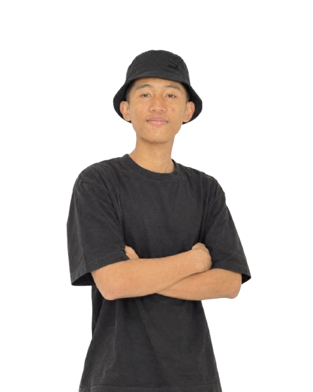

Arvin Erik
Web Developer & Visual Designer
Berawal dari desain, berkembang menjadi kode. Saya menggabungkan visual kreatif dan web development untuk membangun karya digital yang menarik, fungsional, dan bermakna.

Pernah berkolaborasi dengan
Suka desain, suka ngoding, dan senang bikin sesuatu yang bisa dipakai.
Saya Arvin Erik, siswa SMK jurusan PPLG yang suka dengan dunia desain dan web development. Saya senang membuat desain yang menarik sekaligus membangun website, mulai dari tampilan UI, landing page, sampai sistem dengan fitur yang bisa digunakan langsung.
Selama belajar, saya sudah mengerjakan beberapa project, mulai dari desain untuk pemain sepak bola, konten media sosial, website cafe, website furniture, sampai website sekolah. Dari project-project itu, saya terus belajar mengembangkan kemampuan desain dan coding, sekaligus mencari pengalaman baru di dunia kerja.
- LokasiJepara, Jawa Tengah
- FokusWeb Development, UI Design, Graphic Design
- Tools DesainFigma, Canva, Adobe Illustrator
- Tools PengembanganVS Code, Git, XAMPP, Laravel
Beberapa project yang pernah saya kerjakan
Mulai dari desain untuk pemain sepak bola dan media sosial, sampai website untuk cafe, furniture, dan sekolah.
Kata mereka yang pernah berkolaborasi
Klik "Lihat bukti kolaborasi" untuk melihat tangkapan layar atau foto pendukung.
Project desain & pengembangan web
Filter berdasarkan kategori, lalu klik kartu untuk melihat detail dan tautan karya.
Software yang saya pakai
Riwayat pendidikan & pelatihan
[SMKN 1 Bangsri] — [PPLG]
Mempelajari pemrograman, pengembangan website, database, dan desain antarmuka.
Belajar Mandiri Web Development
Belajar HTML, CSS, JavaScript, PHP, Laravel, dan MySQL sambil menerapkannya dalam project website.
Belajar Desain Grafis & UI
Mengembangkan kemampuan menggunakan Figma, Canva, dan Adobe Illustrator untuk membuat desain visual dan tampilan website.
Pelatihan yang saya ikuti
Yuk kolaborasi atau diskusi project
Terbuka untuk kesempatan PKL, project freelance, atau sekadar diskusi seputar desain dan web.